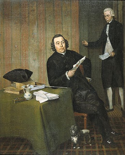

Bava Batra 170 - One Who Makes Superfluous Claims in Court Must Stand by Them
If the occupant of a property comes to litigate with a previous owner concerning ownership of the property, and asserts that he can prove that the property is his with both a deed and a chazakah (three years occupancy) - then Rebbi says that he is judged based on the deed, and Rabbi Shimon ben Gamliel says that he is judged based on chazakah. What is the reason behind their argument?
Rav Dimi says that the deed was in the name of a third party, and the argument is whether the transfer of the deed also transfers property. Abaye says that invalid witnesses signed, and the argument is which witnesses accomplish the transfer - those that sign or those that see it. R’ Avina (Ravina) says that they argue whether one who made a superfluous claim is now required to corroborate it, with Rebbi saying "no" and Rabbi Shimon saying "yes."
Art: Wybrand Hendriks - Notary Kohne and His Clerk